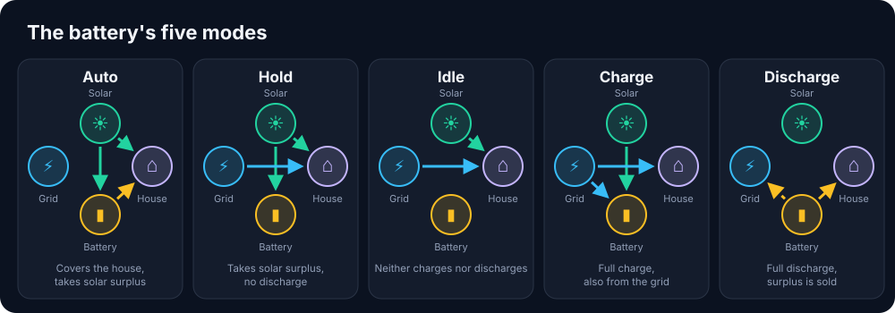
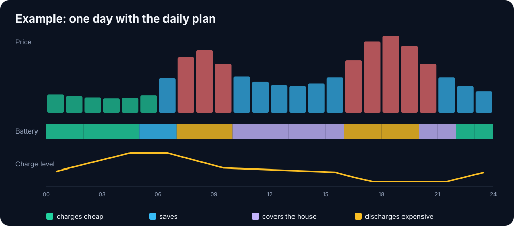
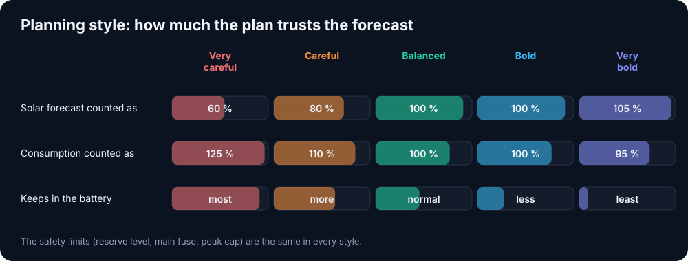
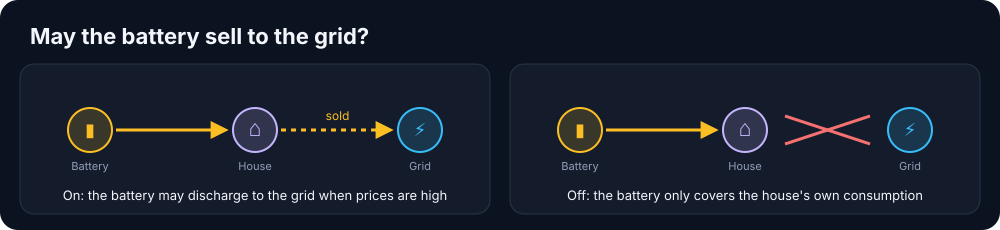

Do you have a home battery?
EnergyWizard can control a home battery as part of the whole house, not as an island. The battery competes with the EV, the heat pump, the spa and solar export for the same watts, so its decisions are made in the same engine that controls everything else: EV charging, the peak cap, the main fuse, the electricity price and the solar surplus. Everything goes through the battery's own Home Assistant integration, with no protocol code of our own.
Status: built and tested with simulated calls, but not yet run against a real battery. Have one? Get in touch - that is exactly what we need.
Three control modes
| Mode | What happens |
|---|---|
samarbete (cooperate, default) | Another system controls the battery, e.g. the inverter's own scheduling or Predbat. EnergyWizard reads the battery, shows it and plans around it, but never writes to it. |
styr (control) | EnergyWizard picks the battery's mode by the rules below. |
av (off) | The battery is ignored. |
The battery's five modes
When EnergyWizard is in control it picks one of five modes every quarter hour. The battery's own mode names (e.g. "Self Use" or "Force Charge") are mapped to these five:

Which batteries can be controlled?
| Battery / Home Assistant integration | Reads | Controls |
|---|---|---|
| Solax Gen4-6 (Solax Modbus) | ✅ | ✅ all five modes |
| Growatt (Solax Modbus) | ✅ | ✅ auto, hold, charge, discharge |
| FoxESS local (foxess_modbus) | ✅ | ✅ auto, hold, charge, discharge + power |
| FoxESS cloud (foxess-ha) | ✅ | auto and hold |
| Felicity Solar (ha_felicity) | ✅ | no, the integration's own scheduler does it (see below) |
| SolarEdge, GivEnergy, Huawei Luna, Sonnen, Victron, Pylontech and others | ✅ | if you map the modes yourself (example at the bottom) |
Everything beyond reading is built against the integrations' source code and not yet run against a real battery.
The rules (in priority order)
- Stale data: if the battery or the power meter stops answering, the inverter takes over (auto).
- Main fuse overloaded: the battery discharges to relieve the main fuse.
- Peak cap reached: the battery covers the peak.
- Negative price: the battery charges from the grid.
- The EV charges from the grid: the battery holds - it is never emptied into the car.
- The EV charges from solar: above your priority level the car gets the surplus before the battery.
- Reserve level: below it the battery is kept for power cuts.
- The daily plan: once calculated, it decides the rest (see below).
- No plan - cheap hour with more expensive ones ahead: the battery is saved for the expensive hours.
- Otherwise: the inverter's self-consumption.
The daily plan
Every fifteen minutes EnergyWizard works out the cheapest plan for the rest of today and tomorrow, quarter by quarter: when the battery should charge, save, discharge or just cover the house. It takes into account the price (full purchase price and what you get for sold power), the house's expected consumption, the solar forecast, the EV's charging plan, the battery's efficiency, the reserve level and how fast it can charge. Energy left at the end of the plan is valued carefully, so the battery is used when it pays instead of being hoarded. The safety rules above always come first.

Planning style
Under Settings → Battery you choose how much the plan trusts the solar and consumption forecast, in five steps from Very careful to Very bold. A careful plan assumes less solar and more consumption than forecast and keeps more in the battery for later. A bold plan trusts the forecast and uses the battery more, which earns the most when the forecast is right. Balanced is the default.

The reserve level, fuse protection and peak cap are the same in every style. The style only changes how the plan calculates, never the safety.
May the battery sell to the grid?
With Allow the battery to sell to the grid on (default) the plan may discharge to the grid when the price is high enough to pay for losses and wear. Turn it off and the battery only covers the house's own consumption - sensible if your contract pays little for exported power or your grid operator charges for it.

Safety
- The battery returns to the inverter's own mode when EnergyWizard starts and stops (e.g. during an update), so it is never left in "discharge" with nothing controlling it.
- Mode changes happen at most every five minutes (safety rules excepted), since inverters store the mode in flash.
- If the battery lacks a mode, the nearest safe one is used instead (idle → hold → auto).
The plan learns your battery
Wear is counted. Each discharged kWh costs a little battery life - 0.30 SEK/kWh by default
(cycle_cost; cell price / (capacity × cycles)). The plan only discharges when the price difference
covers both losses and wear, and each mode switch costs a little too, so the battery doesn't flip back and forth.
From history EnergyWizard learns the battery's real efficiency, usable capacity and actual max power, how far off the solar forecast usually is hour by hour at your house, and the house's consumption per weekday and hour. Learned values are only used when there is enough data and they are physically plausible. Every day it also works out what the battery actually saved yesterday.
Felicity Solar
With partach/ha_felicity (T-REX 5K, 6K, 10K, 25K and 50K over
Modbus) the entity picker recognises the battery and fills in charge level and power, but read-only.
The integration has its own price-based scheduler (EMS), and two systems controlling one battery fight each other.
Its "Backup mode" option also writes Economic mode to the T-REX 5/10K, so EnergyWizard cannot pick modes safely
that way. Let ha_felicity run the battery; EnergyWizard sees it, counts it in the fuse guard and the plan
for the rest of the house, and never writes to it.
Does power show minus while charging? Add power_invert: true under battery:.
How to set it up
The entity picker finds the battery and writes control: samarbete as a safe start. For
styr you map each intent to one of the battery's own modes - exactly the options your select entity
shows in Home Assistant:
battery:
enabled: true
driver: generic
capacity_kwh: 10
control: styr # samarbete | styr | av
reserve_soc: 20 # always kept for power cuts
priority_soc: 50 # above this the EV gets solar first
max_power_w: 5000
cycle_cost: 0.30 # wear, SEK per discharged kWh
plan: true # daily plan (false = rules only)
plan_style: balanced # very_careful | careful | balanced | bold | very_bold
allow_export: true # false = the battery only covers the house
power_invert: false # true if the power sensor shows + while discharging
entities:
soc: sensor.battery_soc
power: sensor.battery_power # + = charging
mode_select: select.battery_mode
modes:
auto: "Self-use"
hold: "..."
idle: "..."
charge: "..."
discharge: "..."Let Predbat see EnergyWizard's planned EV charging
EnergyWizard publishes its EV charging plan as sensor.smartbox_planerad_last
in Home Assistant. Its predbat attribute uses the exact format Predbat's
load_forecast reads (checked against Predbat's source). Add to Predbat's apps.yaml:
load_forecast:
- sensor.smartbox_planerad_last$predbatAvoid double counting: enable Predbat's car_charging_hold and point
car_charging_energy at the charger's energy sensor, so the car is removed from history and only comes
back via EnergyWizard's plan. Not yet verified against a real Predbat installation.